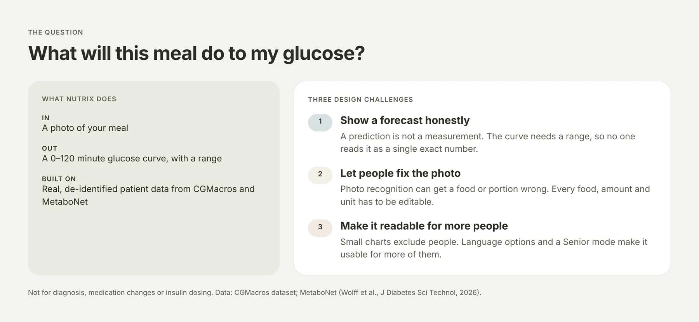
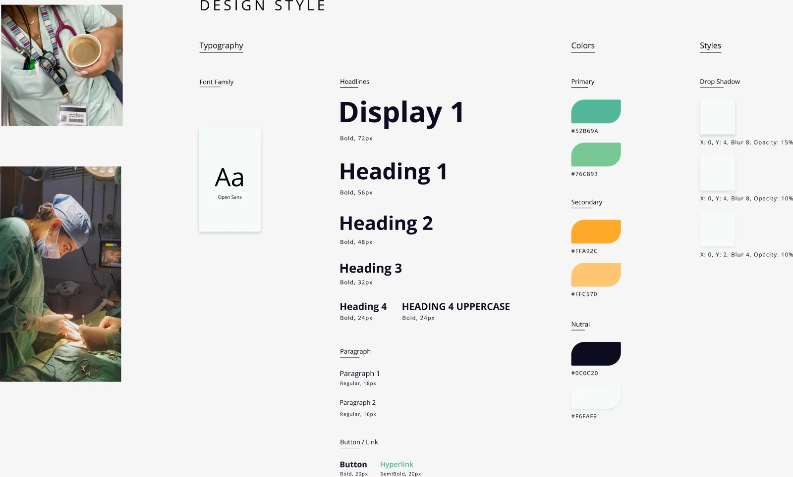
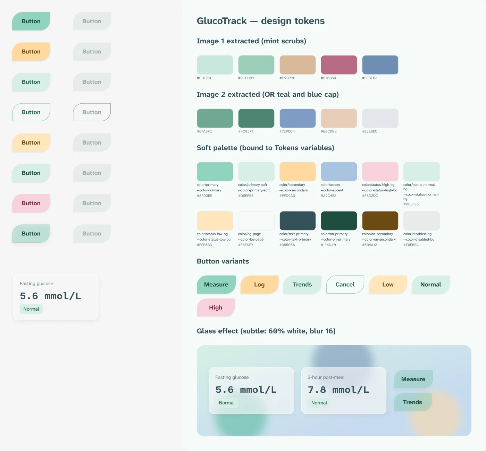
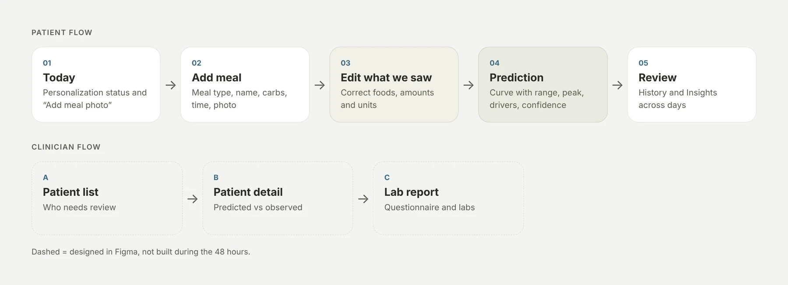
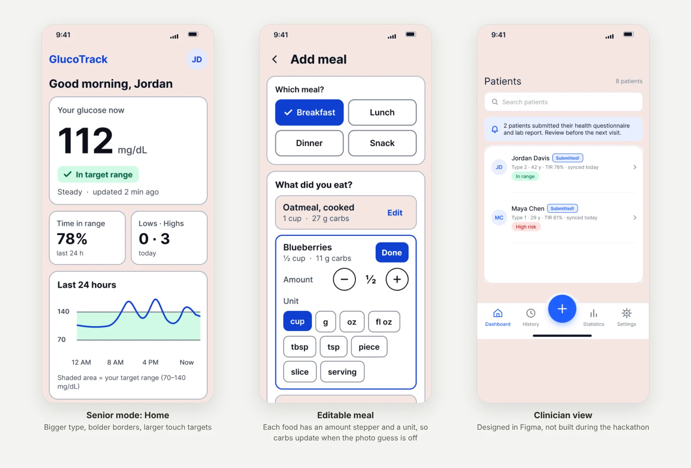

Bridging physical spaces and digital experiences.
Interior designer turned UX/UI designer, crafting calm, human-centered products from research to interface.
Selected Work
Nutrix
Nutrix predicts how a meal will change your blood glucose over the next two hours, starting from a photo of the food. A team of five built it in 48 hours.
- My role
- UX/UI design, accessibility, and the front-end styling. I designed in Figma, then turned the design into a global stylesheet and applied it in the Expo app with AI tools.
- Team
- Fei Yuan and Edward Shen built the data and model architecture. Han Wang was the software engineer. Fiona Zhou made the video and slides and presented.
01
Define the question
We wanted people to see what a meal might do before they eat it. We worked from real, de-identified patient data provided for the hackathon, so we did not run interviews. The design had three challenges.


02
Choose a visual direction
My first screen set in Figma used a standard blue medical palette. Then I made a moodboard of clinical settings (scrubs, operating-room teal, blue caps), pulled colours from two photos and turned them into soft tokens: mint primary, amber secondary, rose for high readings, rounded leaf-shaped buttons and a light glass surface.




03
Map the flow
The patient flow has two jobs: check a meal before eating, and review the days afterwards. A clinician flow was designed too, but not built within 48 hours.


04
Design for accuracy and access
Photo recognition can get a food or portion wrong, so every food has an amount and a unit that people can edit. I also designed Senior mode with larger text and stronger contrast, and the language options (English, Español, 中文). Accessibility is my specialty, so these were my calls.


Data: CGMacros dataset; MetaboNet (Wolff MK, Calhoun P, Aiello EM, Qin Y, Royston SF. MetaboNet: The Largest Publicly Available Consolidated Data Set for Type 1 Diabetes Management. J Diabetes Sci Technol, 2026). Nutrix is not for diagnosis, medication changes or insulin dosing.
Renter-Proof
Renter-Proof is a design-ideas app for students and renters who live in small rooms they cannot change. It is called Cozy Space Ideas. One codebase runs on a phone and in a browser window of any size, with real sizes, readable contrast and forms that explain themselves.
- My role
- Interior designer, UX researcher and UI designer. I sketched the flow in lo-fi, set the direction with a moodboard and my own writing style, and chose every image from my own work. I directed AI coding tools to build it in Expo and React Native, then reviewed, tested and revised the result.
- Tools
- Figma Expo React Native